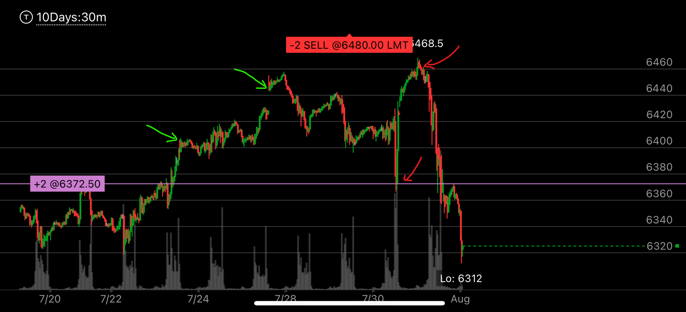
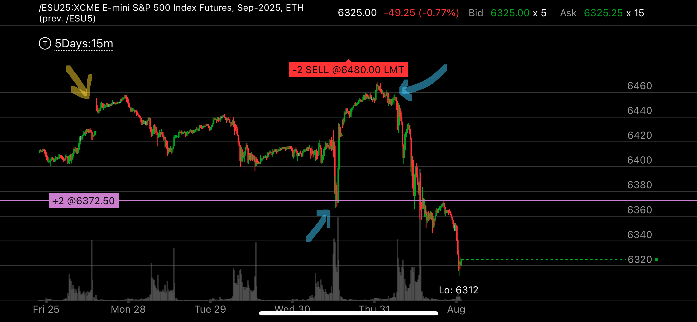
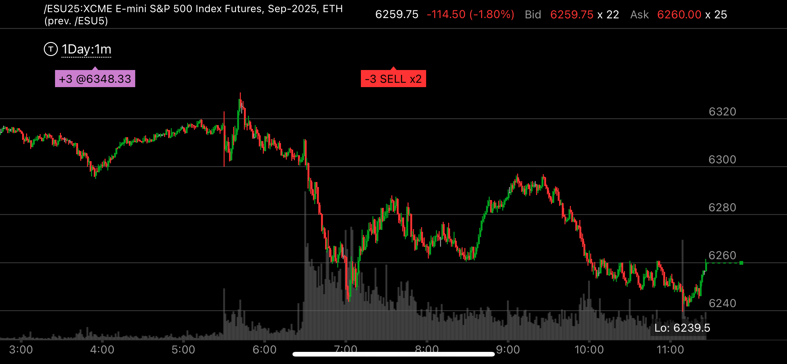

超买后引起的大跌，如何结束
- 超买引起的大跌，不是反转走势，它不需要一个加速下跌的走势就可以结束
- 它大幅下跌后，反弹很弱，然后再次大幅下跌，这时，在底部形成双底。这个其实就是用超卖对付超卖。因为下跌后，反弹很弱，继续大跌，这个就是超卖信号
- 它第一次下跌后，快速反弹，但是没有形成了一个完成走势，然后再次下跌，然后走平，这个是一个相对弱势。
- 无论那种走势，它似乎出现了一个两端走势，才会结束

图示:
- 两个绿色箭头，下跌的时候出现了超卖。它下跌后，没有明显的反弹，再次创新低。
同一个走势，15分钟和30分钟分析和一分钟的当天走势

图示:
- 可以看到它从6468.5新高点下跌后，反弹很小，基本就是大跌，走平，再次大跌的样子。

图示:
- 这个是同一个图，只是15分钟分辨率
- 从最高点开始，它中间稍微反弹一点点，然后再次大跌。形成了超卖走势。

图示:
- 这个是同一个图，只是1分钟
- 这个是这个走势反转的当天，它出现了一个大幅的反弹，然后再次下跌，形成双底。要注意，它不需要向下加速下跌。因为本来也不是反转走势